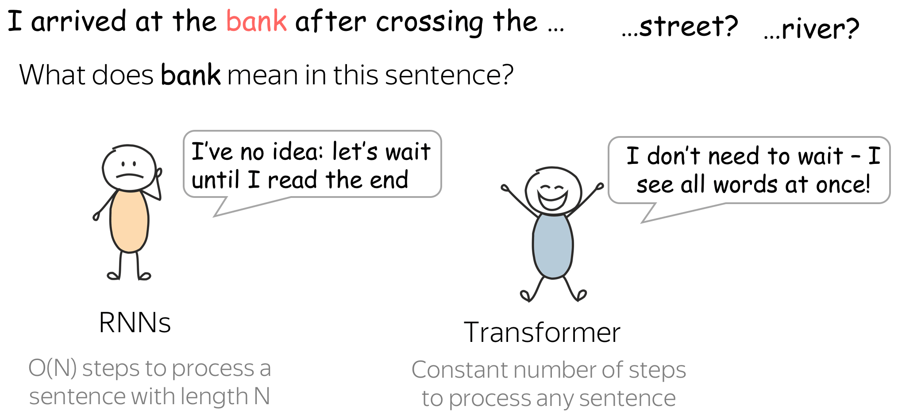

序列到序列（Seq2Seq）与注意力机制 (英文原文)

最流行的序列到序列任务是翻译（Translation），通常来讲，翻译将一种自然语言转换到另一种自然语言。在过去几年，机器翻译商业系统取得了出彩的效果，例如： 谷歌翻译, Yandex翻译, DeepL翻译, 微软必应翻译. 今天，我们将会学习这些系统的核心部分。
除了不同自然语言之间的机器翻译，你还可以在不同的编程语言之间进行翻译（参见Facebook AI博客 Deep learning to translate between programming languages)，或者在你可以想到的任何token序列之间进行翻译。从现在开始，我们所说的机器翻译泛指任何序列到序列任务，即任何性质的token序列之间的翻译。
在下文中，我们将首先学习序列到序列模型（Seq2Seq）的基础知识，接着学习当下模型的重要组成部分：注意力机制（Attention），最后学习目前最流行的模型：Transformer。当然，还有大量的分析、练习、论文和Have Fun！
序列到序列基础 (英文原文)
在机器翻译任务中，我们有输入序列：\(x_1, x_2, \dots, x_m\) ，以及输出序列：\(y_1, y_2, \dots, y_n\) （注意：输入序列与输出序列长度可以不同)。 给定输入序列，翻译任务的目标是寻找最有可能的输出序列，也就是使得条件概率\(p(y|x)\): \(y^{\ast}=\arg\max\limits_{y}p(y|x)\)最大的输出序列。
如果你懂两种语言，并能很容易地翻译两种语言，那么对于给定的输入序列\(x\)和输出序列\(y\)，你就会有一种对于\(p(y|x)\) 的直觉“这个翻译对于句子\(x\)来说更加自然”。 但是在机器翻译中，我们需要学习一个带有参数\(\theta\) 的函数\(p(y|x, \theta)\) ，并在给定输入\(x\)以及参数\(\theta\) 的情况下，找到使得该条件概率\(p\)最大的翻译\(y'=\arg\max\limits_{y}p(y|x, \theta)\)。
为了定义一个机器翻译系统，我们需要回答以下三个问题：
- 建模：模型\(p(y|x, \theta)\)看起来是什么样子的？
- 学习：如何找到参数\(\theta\)？
- 推断：如何找到最优的\(y\)？
在这一节中，我们将基于基础模型来完整地回答第二个和第三个问题。更加“真实”的模型将在Attention与Transformer小节讨论。
编码器-解码器框架 (英文原文)

编码器-解码器是序列到序列任务的标准建模范式。这个框架由两部分组成：
- 编码器：读取源序列并产生其表示；
- 解码器：使用来自编码器的源表示，生成目标序列。
在本文中，我们将看到不同的模型，但是其均具有编码器-解码器结构。
条件语言模型 (英文原文)
在语言模型一文中，我们学习了预测token序列 \(y=(y_1, y_2, \dots , y_n)\) 的概率 \(p(y)\) 。不同于语言模型预测序列 \(y\) 的无条件概率 \(p(y)\) ，序列到序列模型需要在给定源序列 \(x\) 的条件下预测目标序列 \(y\) 的条件概率 \(p(y|x)\) 。这就是为什么序列到序列任务可以被建模为条件语言模型（Conditional Language Models，CLM），条件语言模型与语言模型的操作方式相似，但需要额外考虑源信息 \(x\)。

编者按: 请注意条件语言模型不局限于解决序列到序列任务。在更广义的场景下， \(x\) 可以表示除了token序列以外的信息。例如：在图像描述（Image Captioning）任务中， \(x\) 可以表示图像， \(y\) 表示图像的描述。
由于条件语言模型与语言模型唯一的区别在于是否接收源信息，因此条件语言模型的建模与训练与语言模型十分相似。具体来说，流程如下：
- 将源序列和已经生成的目标词语输入网络；
- 从网络解码器中获取上下文向量表示（包括源序列和已经生成的目标词语）；
- 利用该向量表示，预测下一个词语的概率分布。

类似于神经分类器和语言模型，我们可以用一种非常简单的方式来考虑分类部分(即如何从文本的向量表示中获得token概率)。 文本的向量表示具有维度 \(d\)，但最终，我们需要维度为 \(|V|\) 的向量（对于 \(|V|\) 个token或类别的概率)。 为了从一个维度为 \(d\) 的向量得到一个维度为 \(|V|\) 的向量，我们可以使用一个线性层。一旦我们有了维度为 \(|V|\) 的向量，剩下的就是应用softmax操作将原始数字转换为token概率。
最简单的模型：编码器与解码器均为RNN (英文原文)

最简单的编码器-解码器模型由两个 RNN（LSTM）组成，一个用于编码器，另一个用于解码器。编码器 RNN 读取源句， 其最后的状态被用作解码器 RNN 的初始状态。这种方式希望最终的编码器状态能够“编码”全部源端信息，解码器能够基于此向量生成目标句子。
这个模型可以有不同的变体：例如，编码器和解码器可以有多层。在论文Sequence to Sequence Learning with Neural Networks中就用到了这样一个多层的模型，这是使用神经网络解决序列到序列任务的首次尝试之一。
在同一篇论文中，作者们探究了编码器的最后一个状态表示，并可视化了几个样例，如下图。有趣的是，意义相似但是结构不同的句子表示是很接近的！
样例来源于论文
Sequence to Sequence
Learning with Neural Networks.
论文Sequence to Sequence Learning with Neural Networks介绍了一个优雅的技巧使得简单的LSTM性能更好。在研究思考小节的练习中了解更多。
训练：交叉熵损失 (英文原文)
编者按: 这与我们之前在文本分类与语言模型中讨论的交叉熵损失是同一个损失。你可以跳过这一部分，或者快速的阅读这部分。
与神经语言模型相似，神经序列到序列模型的训练是为了在给定之前上下文（源序列和已经生成的目标词语）的条件下，预测下一个词语的概率分布。直觉上来讲，在每一步，我们最大化模型分配给正确词语的概率。
假设我们有训练样例，包含了源序列 \(x=(x_1, \dots, x_m)\) 和目标序列 \(y=(y_1, \dots, y_n)\) ，在每一个时间步 \(t\) ，一个模型预测概率分布 \(p^{(t)} = p(\ast|y_1, \dots, y_{t-1}, x_1, \dots, x_m)\) 。这一步的目标是 \(p^{\ast}=\mbox{one-hot}(y_t)\) ，也就是说，我们想要一个模型给正确词语分配概率为1，给剩余的词语分配概率为0。
标准的损失函数是交叉熵损失。目标分布\(p^{\ast}\)和预测分布\(p^{}\)的交叉熵损失为： \[Loss(p^{\ast}, p^{})= - p^{\ast} \log(p) = -\sum\limits_{i=1}^{|V|}p_i^{\ast} \log(p_i).\] 由于仅有一个\(p_i^{\ast}\)是非0的（对于正确的词语\(y_t\)），将有： \[Loss(p^{\ast}, p) = -\log(p_{y_t})=-\log(p(y_t| y_{\mbox{<}t}, x))\]在每一步，我们最大化模型分配给正确词语的概率，如下图所示。

对于整个样例，损失为：\(-\sum\limits_{t=1}^n\log(p(y_t| y_{\mbox{<}t}, x))\)。训练过程如下图所示（该图是针对 RNN 模型的，其他类似模型也适用）：
推断：贪婪解码（Greedy Decoding）和集束搜索（Beam Search） (英文原文)
现在我们理解了一个模型看起来是什么样子的以及如何训练这个模型，现在让我们思考如何使用该模型生成翻译：
现在的核心问题是：如何找到函数的argmax?
请注意我们无法找到精确的解决方案。我们需要检查的假设总数为\(|V|^n\)，这在实际操作中是不可行的。因此，我们需要找到一个近似的解决方案。
编者按: 在实际中，精确的解决方案通常要比我们将要使用的近似解决方案差。
• 贪婪解码: 在每一步，选择最有可能的词语 (英文原文)
最直接的解码策略是贪婪解码。在每一步，生成具有最高概率的词语。这是一个不错的基线方法，但这种方法有内在缺陷：当前步骤中的最好词语不一定推出最好的序列。

• 集束搜索: 追踪几个最有可能的假设。 (英文原文)
不同于贪婪解码只跟踪一个序列，我们现在保持多个假设。在每一步，我们选择概率最高的N个假设（top-N）继续搜索。这叫做集束搜索（Beam Search）。
通常来讲，集束大小为4-10。增加集束大小会使得计算低效，更重要的是，将会导致更差的生成质量。
注意力机制 (英文原文)
固定编码器表示的问题 (英文原文)
问题: 固定的源表示是次优的: (i) 对于编码器来讲，很难压缩句子；(ii) 对于解码器来讲，与不同的解码步相关的信息可能不同。

到目前为止我们看到的模型中，编码器将整个源句子压缩到单一向量。这是十分有难度的。源句子含义的数量可能是无限的。并且强制要求编码器将所有信息压缩到单一向量，该向量可能会丢失信息。
编者按: 想象一下浩瀚的宇宙，试着可视化所有你能在这里找到的东西以及你如何用语言描述它。然后想象这一切被压缩到单一向量，例如，仅有512维的向量，你觉得这个宇宙还OK吗？
除了编码器将所有信息压缩到单一向量的难度以外。这对于解码器来说也很难。解码器仅仅可以观测到来自于源端的一个向量表示。然而，在每一个生成步，源端的不同部分会有不同的作用。但是在目前的设定中，解码器必须从相同的固定表示中提取相关信息，这是一件很难的事情。
注意力机制：一个抽象的观点 (英文原文)
注意力机制由论文 Neural Machine Translation by Jointly Learning to Align and Translate 提出，用于解决固定表示所造成的问题。
注意力: 在不同步，让模型"专注"于输入的不同部分。
注意力机制是神经网络的一部分。在解码的每一步，该机制决定源端哪一个部分是更加重要的。 在这种设定下，编码器无需将整个源端压缩进单一向量表示，该机制为所有的源端词语提供表示（例如：RNN 的所有状态而非仅仅最后一个状态）。

在解码的每一步，注意力机制：
- 接收注意力输入 ：一个解码器状态 \(\color{#b01277}{h_t}\) 以及全部编码器状态 \(\color{#7fb32d}{s_1}\) , \(\color{#7fb32d}{s_2}\), ..., \(\color{#7fb32d}{s_m}\) ；
- 计算注意力分数：对于每一个编码器状态 \(\color{#7fb32d}{s_k}\) ，注意力机制计算该编码器状态与解码器状态 \(\color{#b01277}{h_t}\) 的“相关性”。 形式化来讲，注意力机制接收一个解码器状态以及一个编码器状态， 并使用注意力方程返回标量输出 \(\color{#307cc2}{score}(\color{#b01277}{h_t}\color{black}{,}\color{#7fb32d}{s_k}\color{black})\) 。
- 计算注意力权重：一个概率分布，将函数应用于注意力分数。
- 计算注意力输出：编码器状态与对应注意力权重的加权求和。
一般计算流程如下：

注意：所有运算都是可导的，以端到端的方式学习！ (英文原文)
注意力机制的核心想法是：在每一步，网络可以学习哪些输入部分是更加重要的。 由于现在所有的运算都是可导的（注意力方程，以及其余部分），因此具有注意力机制的模型可以进行端到端训练。 你不需要专门教模型挑选你想要的词，模型本身会学习挑选重要信息。
浏览幻灯片。试着注意每一步的注意权重是如何变化的，在每一步中哪些词是最重要的？


如何计算注意力分数？ (英文原文)
在上面描述的方法中，我们还没有明确如何计算注意力分数。你可以应用任何你想要使用的函数，甚至是一个极其复杂的函数。然而，通常你不需要这样做，现在已经有几个效果好， 并且简单的注意力函数变体可以使用。
最流行的计算注意力分数的方法是：
- dot-product： 最简单的方法；
- bilinear function（又称“Luong attention”），在论文Effective Approaches to Attention-based Neural Machine Translation中使用；
- multi-layer perceptron（又称“Bahdanau attention”），由论文提出。
模型变种：Bahdanau 和 Luong (英文原文)
当谈论到早期的注意力模型的时候，你极有可能听到这些变种：
- Bahdanau attention，来自Dzmitry Bahdanau, KyungHyun Cho 和 Yoshua Bengio的论文 Neural Machine Translation by Jointly Learning to Align and Translate （这是首次引入注意力机制的论文）；
- Luong attention ，来自Minh-Thang Luong, Hieu Pham, Christopher D. Manning的论文 Effective Approaches to Attention-based Neural Machine Translation。
这些指的是论文中模型使用的注意力得分函数。在这一部分，我们将更仔细地研究这两个模型变体。
Bahdanau 模型 (英文原文)
-
编码器：双向的
为了更好地编码每一个源端词语，编码器拥有两个 RNN ：前向RNN与后向RNN，它们以相反的方向读取输入。对于每一个token，两个RNN的状态被拼接起来作为该token的表示。 -
注意力分数：multi-laryer perceptron
为了获得注意力分数，将多层感知机（MLP）应用于编码器状态和解码器状态。 -
注意力应用：解码步骤之间
注意力在解码步骤之间使用。状态\(\color{#b01277}{h_{t-1}}\)被用来计算注意力及其输出\(\color{#7fb32d}{c}^{\color{#b01277}{(t)}}\)， \(\color{#b01277}{h_{t-1}}\)与\(\color{#7fb32d}{c}^{\color{#b01277}{(t)}}\)均在第\(t\)步被传递给解码器。
Luong 模型 (英文原文)
论文考虑了多种模型变体，被称为“Luong 注意力”的方法如下：
- 编码器：单向的（简单） (simple)
- 注意力分数：bilinear function
-
注意力应用：在解码器 RNN 状态\(t\)和该步的预测之间
注意力在RNN解码\(t\)步之后，做出预测之前使用。状态\(\color{#b01277}{h_{t}}\)被用来计算注意力以及输出\(\color{#7fb32d}{c}^{\color{#b01277}{(t)}}\)。 然后\(\color{#b01277}{h_{t}}\)结合\(\color{#7fb32d}{c}^{\color{#b01277}{(t)}}\)得到更新后的表示\(\color{#b01277}{\tilde{h}_{t}}\)，被用来获得最终预测。

注意力机制学习对齐 (英文原文)
还记得注意力机制的动机吗？在不同步，解码器可能需要关注不同的源token，即在这一步中更相关的的源token。让我们来看一下注意力权重，解码器使用哪些源词语？

样例来源于
Neural Machine Translation
by Jointly Learning to Align and Translate.
从样例中我们看出，注意力机制学会了源词语和目标词语之间的（软）对齐，解码器“看向”它正在翻译的源端词语。
编者按: “对齐”是统计机器翻译中的一个术语，但在这一部分，其直观理解为“什么被翻译成什么”就足够了
Transformer: Attention is All You Need (英文原文)
Transformer是2017年在论文Attention is All You Need中介绍的一个模型。 它完全基于注意力机制：即没有循环和卷积。除了更高的翻译质量之外，该模型的训练速度也快了一个数量级。目前，Transformers（及其变种）不仅是序列到序列任务的标准模型， 同时也是语言模型和预训练设定下的标准模型，我们将在下一章介绍。
Transformer引入了一种新的建模范式：不同于之前的模型编码器和解码器采用循环和卷积的处理方式，Transformer只使用注意力机制进行操作
请看 Google AI blog post 中介绍Transformer的插图。

动画来源于Google AI博客。
不涉及太多细节，让我们用文字来描述刚刚在插图中看到的东西。我们将得到如下内容:
但是，为什么它相比于RNN在语言理解上更加合适？我们看一个例子。
当编码一个句子的时候，RNN 直到阅读完整个句子才会理解“bank” 的含义，这一过程对于长序列来说需要一些时间。与此相反，在Transformer编码器中，所有token的交互都在一次完成。
直观上，Transformer的编码器可以被看作是推理步骤（层）的序列。在每一步，token之间互相观测（这是我们需要注意的地方，自注意力 ）， 交换信息并试图在整个句子上下文中更好地理解对方。这发生在多个层（例如：第六层）
在每一个解码器层中，前缀中的token同样通过自注意力机制交互，除此以外，它们还查看编码器状态（如果没有这一部分，将无法进行翻译，是吧？）
现在，让我们努力理解这是如何在模型中实现的。
自注意力机制：“互相观测”部分 (英文原文)
自注意力是模型中关键的组成部分之一。注意力和自注意力 的区别在于：自注意力在同一性质的表示之间起作用：例如，某一层中的所有编码器状态。
自注意力是模型的一部分，在该部分之间互相观测。每一个token使用注意力机制“观测”句子中的其他词语，收集上下文，并更新“自身”之前的表示。请看插图。
注意在实践中，这是并行发生的。
自注意力中的查询（Query）、键（Key）和值（Value） (英文原文)
从形式上看，上述想法通过查询-键-值（query-key-value）注意力来实现。在自注意力中，每个输入token都接收到三种对应于它可以扮演的角色的表示:
- 查询 ：询问信息；
- 键 ：表示它本身包含了一些信息；
- 值 ：可以提供的信息；
当一个token查看其他token的时候会使用查询 ，它寻找信息以更好的理解自己。键是对查询请求的响应，它用于计算注意力权重。值用来计算注意力输出，它给那些“说”需要它的token提供信息（即给这个token分配大的权重）。

注意力输出的计算公式如下：

掩码自注意力机制：解码器“不要超前看” (英文原文)
在解码器中，同样也有一个自注意力机制：它是一个“查看之前token”的函数。
解码器中的自注意力与编码器中的自注意力稍有不同。编码器一次性接收所有 的token，并且输入句子中的token可以互相观测。在解码器中，我们在每一个时刻生成一个token ：在生成过程中，我们不知道未来将会生成哪些token。
（在训练时）为了避免解码器超前查看，模型使用掩码自注意力：未来的token会被掩盖。请看插图。
解码器在什么情况下可以超前看呢？ (英文原文)
在生成过程中，解码器无法超前查看，我们不知道接下来将会输出什么。但是在训练过程中，我们使用标注的翻译（我们已经提前知道）。 因此，在训练过程中，我们将整个目标句子输入到解码器中，没有掩码，token可以超前看到“未来的”token，但这并不是我们想要的。
这样做是为了提高计算效率：Transformer没有循环模块，因此所有的token均可以一次性处理。这是它在机器翻译中如此受欢迎的原因之一，它比曾经占主导地位的基于循环组件的模型训练得更快。 对于基于循环组件的模型，一个训练步骤需要O(len(源句子) + len(目标句子))步数。但对于Transformer，仅需要O(1)，是一个常数。
多头注意力机制：独立专注于不同的事情 (英文原文)
通常来讲，理解句子中一个词语的作用需要理解它与句子不同部分的关系。这不仅对源句的处理很重要，而且对目标句的生成也很重要。例如，在一些语言中，主语定义了动词的语态（如性别一致），动词定义了其宾语的情况等。我想说的是： 每个词都是许多关系的一部分。
因此，我们需要让模型专注于不同的事情：这是多头注意力背后的动机。不同于只有一个注意力机制，多头注意力有多个独立工作的“头”。

形式化地，这是通过将多个注意力机制的结果相结合来实现的： \[\mbox{MultiHead}(Q, K, V) = \mbox{Concat}(\mbox{head}_1, \dots, \mbox{head}_n)W_o,\] \[\mbox{head}_i=\mbox{Attention}(QW_Q^i, KW_K^i, VW_V^i)\]
在实现中，你仅需要将为单头注意力计算的查询、键和值拆分为几个部分。通过这种方法，具有一个或多个注意头的模型具有相同的大小，多头注意力不会增加模型的大小。
在分析与解释一节，我们将会看到这些头在模型中扮演不同的角色，例如：定位或跟踪语法依赖。
Transformer： 模型架构 (英文原文)
现在，当我们理解了模型的主要组成部分和总体思路后，让我们来看看整个模型的情况。图中显示了原论文中的模型架构。

直观地说，这个模型所做的正是我们之前讨论的：在编码器中，token之间交互并更新它们的表示；在解码器中，一个目标token首先观测先前生成的目标token，然后查看源端信息，最后更新其表示。这一过程分为几层，通常是6层。
让我们更详细地看一下其他的模型组件。
• 前馈块（Feed-forward blocks） (英文原文)

除了注意力，每一层都有一个前馈神经网络块：两个线性层以及它们之间的非线性 ReLU： \[FFN(x) = \max(0, xW_1+b_1)W_2+b_2.\] 在通过注意力机制查看其他token之后，模型使用一个前馈神经网络块来处理新的信息。（注意力： 查看其他token并收集信息，前馈神经网络： 花点时间思考和处理这些信息）。
• 残差连接（Residual connections） (英文原文)

在讨论卷积语言模型时，我们已经看到了残差连接。尽管残差连接非常简单（将模块的输入添加到它的输出），但是却非常有效：它缓解了网络中的梯度流，并且允许网络堆叠多层。
在Transformer中，在每个注意力块和前馈神经网络块之后使用残差连接。在上面的插图中，残差以箭头的形式围绕块（注意力块和前馈神经网络快） 并指向黄色的“Add & Norm”层。在“Add & Norm”部分， “Add”部分代表残差连接。
• 层归一化（Layer Normalization） (英文原文)

“Add & Norm”层中的“Norm”部分代表层归一化（layer Normalization）。它独立地对批次（Batch）中每一个例子的向量表示进行归一化处理，这样做是为了控制进入下一层的 "信息流"。层归一化可以提高收敛稳定性，有时甚至提高收敛质量。
在Transformer中，你必须对每个token的向量表示进行归一化。除此以外，这里的LayerNorm有可训练的参数， \(scale\) 和 \(bias\) ，这些参数在归一化之后被用来重新缩放层的输出(或下一层的输入)。 注意， \(\mu_k\) 和 \(\sigma_k\) 是针对每个例子进行评估的，但是 \(scale\) 和 \(bias\) 对于每个例子是相同的，这些是层参数。
• 位置编码（Positional encoding） (英文原文)

注意，由于Transformer不包含循环或卷积，因此它不知道输入token的顺序。因此，我们必须让模型明确地知道token的位置。 为此，我们有两组嵌入（embedding）：对于token（和我们之前的做法一样）和对于位置（这个模型需要的新嵌入）。然后， 一个token的输入表示是两个嵌入的总和：token表示和位置表示。
位置嵌入是可学习的，但作者发现固定的嵌入并不会损害质量。在Transformer中使用的固定位置编码是: \[\mbox{PE}_{pos, 2i}=\sin(pos/10000^{2i/d_{model}}),\] \[\mbox{PE}_{pos, 2i+1}=\cos(pos/10000^{2i/d_{model}}),\] \(pos\) 是位置， \(i\) 是向量维度。位置编码的每个维度都对应于一个正弦曲线（sinusoid），波长形成一个从2π到10000 · 2π的几何级数。
子词切分：Byte Pair Encoding (英文原文)
正如我们所知，一个模型有一个预定义的token词汇表。那些不在词汇表中的输入token，将被替换成一个特殊的 UNK（"未知"）token 。 因此，如果你直接使用单词级别的分词（即你的token就是单词），你将能够处理固定数量的单词。这就是固定词汇量的问题 ：你会得到很多未知的token，你的模型将无法正确地翻译它们。
但是，我们怎样才能够表示所有的词，即使是那些我们在训练数据中没有见过的词？好吧，即使你不熟悉一个词，你也熟悉它所包含的部分：子词（在最坏的情况下是：符号）。那么，我们为什么不把稀有和未知的词分成更小的部分呢？
这正是Rico Sennrich、Barry Haddow和Alexandra Birch在Neural Machine Translation of Rare Words with Subword Units一文中提出的。他们提出了标准的子词切分方法：Byte Pair Encoding (BPE)。BPE保留频繁出现的单词，并将罕见和未知的单词分割成更小的已知部分。
BPE是如何工作的？ (英文原文)
原始的Byte Pair Encoding (BPE) (Gage, 1994)是一种简单的数据压缩技术，它迭代地使用一个未使用的字节替换序列中最频繁的字节对。我们现在所讨论的BPE是将其适配到单词切分的一种算法。它合并字符或者字符序列，而非合并频繁的字节对。
BPE算法由两部分组成：
- 训练：学习“BPE规则”，即要合并的符号对；
- 推理：应用学习到的规则来分割文本。
让我们更详细地学习这两部分。
训练：学习BPE规则 (英文原文)
在这一步，BPE算法建立一个合并表和一个token表。初始的token表包含了字符，初始的合并表为一个空表。这一步，每一个单词首先被切分为字符序列。然后，算法如下：
- 计数符号对：在训练数据中，每个符号对一共出现了多少次；
- 找到最频繁的符号对；
- 合并该符号对：在合并表中添加该合并，以及在词汇表中添加合并后新的token。
在实践中，该算法首先计数每个单词在数据中出现的次数。利用该信息，它可以更容易地计数符号对。还要注意，token不跨越单词边界，一切都发生在单词内。
插图展示一个简单的示例：假设在训练数据中， cat出现4次， mat出现5次， mats， mate， ate， eat分别出现2，3，3，2次。我们还必须设置我们想要的最大合并次数； 通常，根据数据集大小，大概是4k-32k，但在我们简单的例子中，我们设置最大合并次数为5。
当我们达到最大合并数目时，并不是所有的单词都合并到一个token中。例如，mats 被分割为两个token： mat@@和s 。注意，在分割之后，我们添加了特殊字符@@， 以区分代表整个单词的token和代表部分单词的token。在我们的示例中，mat和mat@@是不同的token。
实现笔记。 在实现中，您需要确保新的合并仅向词汇表添加一个新token。为此，你可以为每个单词添加一个特殊的词尾（end-of-word）符号（就像在原始BPE论文中所做的那样）， 或者用一个特殊符号替换空格（就像在 Sentencepece 和 YouTokenToMe 中所做的那样，这是最快的实现），或者采取其他一些操作。在插图中，为了简单起见，我省略了这一点。
推断：切分文本 (英文原文)
在学习BPE规则之后，你已经有了一个合并表，现在，我们将使用它来分割一段新文本。
该算法首先将一个单词分割成一个字符序列。然后，它迭代地进行以下两个步骤，直到没有合并操作可以进行:
- 在这一步所有可能的合并中，找到表中位置最靠前的合并；
- 应用该合并操作
注意，合并表是有序的，表中位置靠前的合并表示该合并在数据中出现地更频繁。这就是为什么在算法中，靠前的合并具有更高的优先级：在每一步，我们在所有可能的合并中选择位置最靠前的合并操作。
分析与解释 (英文原文)
多头自注意力：这些“头”在做什么？ (英文原文)
让我们首先从传统的模型分析方法开始：查看模型组件。之前，我们查看了分类器中的卷积滤波器，语言模型中的神经元；现在，是时候查看一个更大的组件：注意力。 但我们先不考虑简单的那一种，而是考虑Transformer多头注意力中的各个“头”。
编者按: 首先，我们为什么要这么做？多头注意力是Transformer中引入的归纳偏置。当在一个模型中创建归纳偏置的时候， 我们通常对该归纳偏置是否有用有某种直觉。因此，理解这个新的部分是如何工作的是有益的。它能学习我们认为它会学习的东西吗？ 如果没有，为什么它有帮助？如果是，我们该如何改进？希望你现在有足够的动力，让我们继续。
最重要的头是可以解释的 (英文原文)
在这里我们将提到ACL 2019论文Analyzing Multi-Head Self-Attention: Specialized Heads Do the Heavy Lifting, the Rest Can Be Pruned中的一些结果。 作者研究了编码器中多头注意力中各个独立的注意力头，并评估了不同的头对生成的翻译的平均 "贡献 "程度（细节可查看原论文或者博客）。结果发现，
- 只有一小部分注意力头对翻译是重要的，
- 这些注意力头扮演着可解释的 "角色"。
这些角色是:
- 位置：关注一个token的近邻，模型中有几个这样的注意力头（通常是2-3个头关注之前的token，2个头关注之后的token）；
- 句法：学会了在句子中追踪一些主要的句法关系(主谓、动宾);
- 稀有token：第一层最重要的头关注句子中最不常见的token（对于在不同语言对上训练的模型是正确的!）
请看下述“位置头”和“句法头”的示例。这意味着我们拥有多个头的直觉是正确的，模型确实学会了追踪单词之间的关系!
Positional heads
Model trained on WMT EN-DE
Model trained on WMT EN-DE
Model trained on WMT EN-FR
Model trained on WMT EN-FR

Model trained on WMT EN-RU
Model trained on WMT EN-RU
Model trained on OpenSubtitles EN-RU
Model trained on OpenSubtitles EN-RU
Syntactic heads (英文原文)
subject-> verb
verb -> subject
subject-> verb

verb -> subject
verb -> subject
object -> verb

verb -> object
object -> verb
Rare tokens head (英文原文)
Model trained on WMT EN-DE
Model trained on WMT EN-DE
Model trained on WMT EN-DE
Model trained on WMT EN-FR
Model trained on WMT EN-FR
Model trained on WMT EN-FR
Model trained on WMT EN-RU
Model trained on WMT EN-RU
Model trained on WMT EN-RU
Model trained on WMT EN-RU
Model trained on OpenSubtitles EN-RU
Model trained on OpenSubtitles EN-RU
Model trained on OpenSubtitles EN-RU
虽然稀有token头看起来非常有趣，但不要高估它，极有可能，这是过度拟合的迹象。通过查看稀有token，模型试图抓住这些罕见的“线索”。
大部分的头可以被修剪 (英文原文)
在这篇论文的后面，作者让模型决定它不需要哪些头(更多细节请参阅论文或博客)，并迭代地裁剪注意力头，即从模型中删除它们。除了证明特定的头是最重要的（因为模型保持它们的完整，而裁剪其他的头），作者发现大多数的头可以被移除而不会有明显的质量损失。
为什么我们不一开始就用少量的头来训练一个模型呢？
你不能这样做，如果这样做模型质量会低很多。在训练中你需要很多头，让它们学习所有有用的信息。
探测：表示捕捉到了什么？ (英文原文)
注意，查看模型组件是一种特定于模型的方法：你可能感兴趣的组件和 "观察 "它们的方法都取决于模型。
现在我们对模型无关的方法感兴趣。例如，模型中的表示学习到了什么信息？它们是否学习到编码一些语言学特征？在这里，我们将把数据输入到一个训练好的网络中，收集数据的向量表示，并将尝试理解这些向量是否编码了一些有趣的东西。
最流行的方法是使用探测分类器(又称探测、探测任务、诊断分类器)。在这种设定下，你：
- 将数据输入网络，并得到数据的向量表示，
- 训练一个分类器，从这些表示中预测一些语言学标签（但模型本身是冻结的，只用于产生表示）。
- 用分类器的准确性来衡量表示对标签的编码程度。
这种分析方法（目前）是NLP中最流行的，我们将在下一章讨论迁移学习时再次用到。现在，让我们看看一些例子，看看如何用它来分析神经机器翻译模型。
编者按: 最近，事实证明，探测分类器的准确性并不是一个好的衡量标准，你需要修改你使用探测分类器评估的内容。但这就是另一个非常不同的故事了...
机器翻译模型对词法学有什么了解？ (英文原文)
在这一部分，我们来看看ACL 2017年的论文What do Neural Machine Translation Models Learn about Morphology?作者在几对语言上训练机器翻译系统（基于LSTM），并分析了这些模型的表示。 在这里，我将只提到部分结果，以说明如何使用探测进行分析。
• 词性标签 (英文原文)
第一个实验研究编码器表示如何很好地捕获词性标签(POS标签)。对于从嵌入开始的每个编码器层，作者训练了一个分类器，从该层的表示预测词性标签。结果如图所示（层0：嵌入层；层1和层2：编码层）。
我们可以看到
- 通过编码器传递嵌入提升了词性标注性能。这是预料之中的，虽然第0层只知道当前的token，但来自编码器层的表示知道它的上下文，因此可以更好地理解词性信息。
- 第1层比第2层好。猜想是：虽然第1层捕获了单词结构，但第2层编码了更多的高级信息（例如，语义）。
• 目标语言的影响 (英文原文)
作者研究的另一个有趣的问题是目标语言的影响。给定相同的源语言（阿拉伯语）和不同的目标语言，用哪种目标语言训练的编码器将学习到更多的源语言词法学? 对于目标语言，作者选用了阿拉伯语、希伯来语（词法丰富的语言，与源语言的词法相似）、德语（词法丰富的语言，但词法与源语言不同）和英语（词法贫乏的语言）。
有点出乎意料的是，较弱的目标词法迫使模型更好地理解源端词法。
研究思考
未配备注意力机制的LSTM (英文原文)
未配备注意力机制的简单LSTM性能较低：这是因为所有的依赖关系都是长期的，这种长距离依赖对于模型来讲很难建模。例如，当解码器生成翻译的开头时，它可能已经忘记了最相关的源输入序列的开头信息。
可能的解答
逆序源token序列
论文Sequence to Sequence Learning with Neural Networks提出了一种优雅的策略使得简单的LSTM序列到序列模型更加有效：逆序源序列的token（保持目标序列不变）。这种做法使得模型会有许多短距离连接（short-term connections），当解码目标序列的开头时，最近编码的源表示将会有更高的相关性。

提升字词分割 (英文原文)
标准BPE分割是确定的:在每一步，它总是选择合并表中最高概率的合并操作。然而，即使是同一个词表，一个单词也可能有不同的分割，例如， un relat ed, u n relate d, un rel ated, 等。
想象一下，在训练NMT模型的过程中，每次我们从几个可能的分割中选择一个，即相同的单词可以有不同的分割。我们使用由标准BPE构建的相同的合并表，并在测试时使用标准分割，我们只修改训练。
可能的解答
为什么选择同一个单词的不同分割可以帮助模型，可能的原因是：
- 通过单词的不同分割，模型可以更好地理解该单词所包含的子词。因此，它可以更好地理解单词的构成成分。
- 由于只有罕见和未知的单词被分割为子词，模型可能不能很好地学习子词的表示。通过不同的分割，它可以在许多不同的上下文中看到子词，并更好地理解它们。
- 这可以作为一种正则化，模型将学会不过度依赖单个token，而是考虑更广泛的上下文(类似于标准的单词dropout)。
为了支持这些观点，让我们挑选几个稀有token，看看它们的最近邻。为了找到最近的邻居，我们使用两个模型的嵌入，分别用（1）BPE和（2）随机分割(我们将在下一个问题中讨论)训练。
我们发现，带有随机分割的模型更能理解单词。随机分割的嵌入空间中最近邻共享公共部分，而BPE则不是这样。
注意，BPE有这个问题只针对罕见的token，对于常见的token，其邻居是合理的
可能的解答
BPE-Dropout:从合并表中删除一些合并
让我们考虑一下BPE-dropout: ACL 2020论文 BPE-Dropout: Simple and Effective Subword Regularization提出的方法。
这个想法非常简单：如果BPE是确定的，这因为我们总是选择概率最高的合并，那么我们需要做的就是（有时）选择其他的合并。为此，作者从BPE合并表中随机删除了一些合并（例如，所有合并的10%）。在这种情况下，最高的合并有时会从表中删除，我们将不得不选择另一个，分割将会不同。
下面展示了与token无关的算法和分割示例。红色下划线表示在每个步骤中删除的合并。注意，要删除的合并在每一步都会再次被选择
在本文中，有大量的实验表明使用BPE-dropout提高了质量，并分析了发生这种情况的原因。在前面的问题中，当研究嵌入空间中最近邻时，您已经看到了这种分析的部分内容。
这里会有更多的练习!
这部分将会逐步更新。

相关论文
这里将会有更多论文！
论文将会逐渐出现。

Have Fun！
马上更新！
我们正在编写这部分。